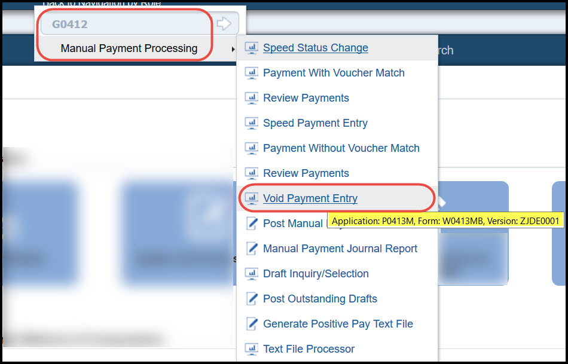
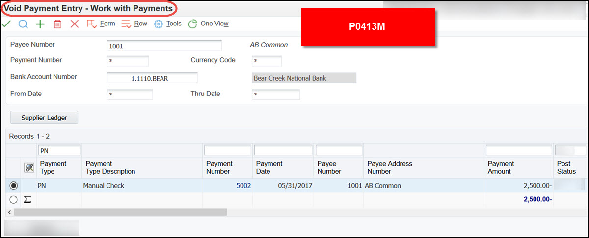

The ability to void or delete a automatic or manual payment depends on the post status of the payment. Deleting a unposted payment does not leave any type of audit trail and removes the entire record from the system (aka tables) and reopens the voucher(s) it was paying. Voiding a automatic or manual payment occurs when the payment was posted after creation, therefore, creating a audit trail of the reversing entries. When you void a payment you must post the payment batch again to update the General Ledger and A/P Trade Account. To know if a payment has been posted the payment tables F0413, F0414 will have a successful post code value of D where as the General Ledger record will be created and have a post code of P. If the payment batch has not been posted to the General Ledger then the F0413 and F0414 payment tables will have a post code or status of blank and no payments will exist in the General Ledger yet.
The Posted (data dictionary item POST) Code of a payment indicates if it has been posted before. The statuses are:
Blank: The payment was not posted or voided.
D: The payment was posted.
P: The payment post ended in an error; the system wrote GL entries to the bank account.
An unposted automatic payment can be voided or deleted, depending on the setting of Processing Option 4: Delete Unposted Automatic Payments on the "Processing tab" of Void Payment Entry/Manual Payment Entry (P0413M).
When payments are voided, the system:
Removes the payment amount from the record in the Accounts Payable - Matching Document (F0413) table.
Creates a matching document with a Document Type (DCT) of PO (voided payment) in the Accounts Payable Matching Document Detail (F0414) table. This matching document has a gross amount that is equal to the void amount and a Pay Status (PST) of P (paid).
Reopens the original vouchers with an open amount and a pay status of A (approved).
Voids payments with multiple currencies by voiding both the domestic and foreign sides of the payment.
Note: Payments that were reconciled with the Manual Reconciliation program (P09131) or Match Tape File to Recon File program (R09510) cannot be voided. Reconciled payments must be unreconciled before they can be voided.
Scope
This document is intended for users who delete, void or unreconcile payments created from automatic payment process and/or manual payments.
Details
Voiding a Payment and Associated Vouchers
To void a payment and not repay the vouchers in another payment cycle, you must void both the payment and its associated vouchers. When voiding both the payment and the associated vouchers, the system:
Removes the payment amount from the record in the Accounts Payable - Matching Document (F0413) table.
Creates a matching document with a Document Type (DCT) of PO (voided payment) in the Accounts Payable Matching Document Detail (F0414) table. This matching document has a gross amount that is equal to the void amount and a Pay Status (PST) of P (paid).
Creates an adjustment document with a Document Type (DCT) of PE (change to voucher amount) in the Accounts Payable Ledger (F0411).This adjustment document has a gross amount that is equal to the void amount and a Pay Status of P (paid). Vouchers cannot be voided unless they have been posted.If the vouchers are selected, but have not been posted, the system returns an error message and only the payment is voided.
Using the Payment Without Match Program to Void Manual Payments
If the payment and vouchers are unposted, the system:
Voids the payment and creates reversing entries for the void when you post.
Reopens the vouchers associated with the payment by changing the pay status back to A and completing the Open Amount field with the original open amount.
Note: If the Delete Unposted Manual Payments processing option for the Payment With Voucher Match program is set to blank, the system deletes both the voucher and the payment.
If the payment and vouchers are posted, the system:
Voids the payment and creates reversing entries for the void when you post.
Voids the vouchers and creates the reversing entries for the void when you post.
Please note that when deleting or voiding a manual payment without voucher match, the check box for 'Void Voucher(s)' is checked and greyed out. This is to ensure the voucher on the payment is deleted or voided at the same time as its payment, to prevent data integrity issues.
Caution: Do not use the JD Edwards EnterpriseOne Accounts Payable system to void vouchers that were created in the JD Edwards EnterpriseOne Procurement system.
How To Void a Automatic or Manual Payment
1. Open the program needed in either of the following ways: a. For Automatic Payments: From the Automatic Payment Processing menu (G0413), choose Void Payment Entry (P0413M). b. For Manual Payments: From the Manual Payment Processing menu (G0412), choose Void Payment Entry (P0413M).

2. On the form that opens, Work with Payments (W0413MB), locate the payment to void by completing any of the following fields and clicking Find: a. Supplier Number b. Payment Number c. Bank Account Number d. From Date e. Thru Date
3. Choose a payment.

4. From the Row menu, choose ‘Void Pymt’.
5. On Void Payment (P0413V, form W0413VA), change the following field to void the payment in a different period, if necessary, and click OK: a. Void G/L Date
NOTE: If you click the option for Void Voucher(s), the voucher(s) associated with the payment will also be voided.
6. Click OK at the prompt to confirm the void.
7. Post the Void of the payment if the payment was posted, if the payment was not posted the steps above Delete the payment and no audit trail is created.
Unreconcile an AP Payment (P09131)
You can change transactions marked for reconciliation back to unreconciled. If you refreshed the reconciliation worktable after you marked the transaction for reconciliation, you need to first refresh the worktable. Typically, you refresh the worktable at the beginning of a new period. When you change a transaction from reconciled to unreconciled, the system deletes the assigned reconciliation number from that transaction. The amount to reconcile is determined by the following calculation:
(The Bank Balance + the Outstanding Debits + the Outstanding Credits) - Book Balance = Amount to Reconcile
Where:
Bank Balance = amount on your bank statement.
Outstanding Debits and Credits = Records in the reconciliation worktable that have not been marked as reconciled.
Book Balance = account balance in your Account Balances table (F0902).
To change transactions to unreconciled in the current period.
From the Account Reconciliation menu (G0921), choose Manual Reconciliation.
On Reconciliations, choose Bank Account Reconciliation.
On Bank Account Reconciliation, complete the Account Number field and click Find
To display reconciled transactions, ensure that the Unreconciled Only option is not turned on.
To change one transaction to unreconciled, locate the transaction and double-click it.
To change multiple transactions, choose the transactions and click Reconcile Toggle.
Click Update to record your changes.
To change transactions to unreconciled in another period From the Account Reconciliation menu (G0921), choose Manual Reconciliation.
On Reconciliations, choose Refresh Reconciliation File.
Run Refresh Reconciliations File and set the processing options as follows:
Change the beginning and ending date range to include the transactions that were reconciled in error.
Set the reconciled status to include reconciled transactions.
Follow the steps to change transactions to unreconciled in the current period.
For releases 9.0 and above
To unreconcile a reconciled transaction, select the transaction and then select Reconcile Toggle from the Row menu.
To complete the reconciliation process, select Up date F0911 from the Form menu for the system to:
Update the GLR3 field in the F0911R work file with the reconciliation number.
Update the GLRCND field in the F0911 table with the information in the F0911R workfile for all reconciled transactions.
Update the GLR3 field in the F0911 table with the reconciliation number from the F0911R workfile if the Reference 3 processing option for the Manual Reconciliation program is set to 1